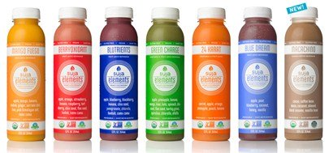
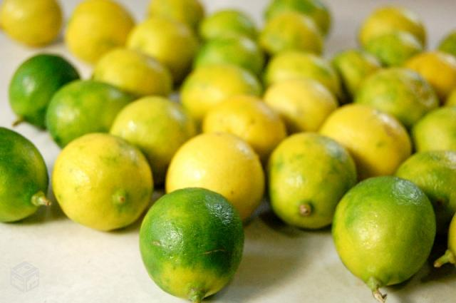

How to Drink More Water
I have a friend that spends a ton of money on all those high-priced drinks you see in Whole Foods.
You know the ones... freshly squeezed watermelon juice, carrot juice, and of course green juice.

But is this really necessary?
Sure it's convenient, but what if you could drink something even healthier for a fraction of the cost?
When you're in control, you can choose the best ingredients and keep things simple.
What would this look like?
3 Ingredients:
- Water
- Key Limes
- Herb or Fruit
If you have Poland Spring bottled water to start with, great!
If you have a water filter, that's great too!
I have the Home Master Reverse Osmosis Filter under my kitchen sink, because it's the only filter I know of that puts back Calcium and Magnesium in the water after being filtered.
The reason why this matters is because we can't absorb "empty" water. If you've ever had distilled water or Kirkland's bottled water (from Costco) then you should know what I'm talking about.
You become bloated, get a stomach ache, or can actually hear and feel the water moving around in your stomach if you drink enough.
Again, this is because you need minerals to absorb water.
Minerals also make water taste better and a lot easier to drink.
This doesn't mean you need to sprinkle sea salt into the water (although technically you could).
Even better than that is to add the minerals that are already present in Key Limes.
I say Key Limes because they're older than the more common Persian Limes and Meyer Lemons.
The giveaway is the small size of the fruit and the large size of the seeds inside. Typically this lets you know the fruit is closer to the original species nature created, which means it has more minerals and is healthier for us.
I get my Key Limes from here... the best part is that some are actually left to ripen on the tree, so they can be yellow instead of green. Who knew right? Yellow limes are a thing.

Now for the fun part... the flavor!
You can chop up any fruit you like and drop it in your water overnight to drink in the morning.
(I use wide mouth, glass mason jars for this)
Or if you really want a health boost... pick one of these great-tasting herbs.
- Sarsaparilla (for energy)
- Damiana (for a stress-relief)
- Chickweed (for a digestive aid)
It's better to "brew" overnight, because the longer it steeps the more the water can absorb.
The Key Lime will help preserve whatever else you put in the water, so it's perfect to take with you to drink at work.
If you want you can use hot water initially to speed up the absorption process of the water and then place in the refrigerator before going to bed.
With this you will be light-years ahead of everyone else that gets those "health" juices from the store.
Aside from losing weight, this will help keep you from the doctor's... unlike the proverbial "apple a day."
Just to be fully transparent, I have one more trick up my sleeve. I have a sweet-tooth... so instead of dumping sugar in my water I eat a few miracle berries right before.
Never heard of miracle berries before? Click here to watch the "miracle berry challenge."
You can bite into a lemon and it'll taste like the sweetest lemonade you've ever had, believe it or not. Better yet if it's a Key Lime. ;)
This is where I get my miracle berries from.
Just imagine if everyone with diabetes could know about this.